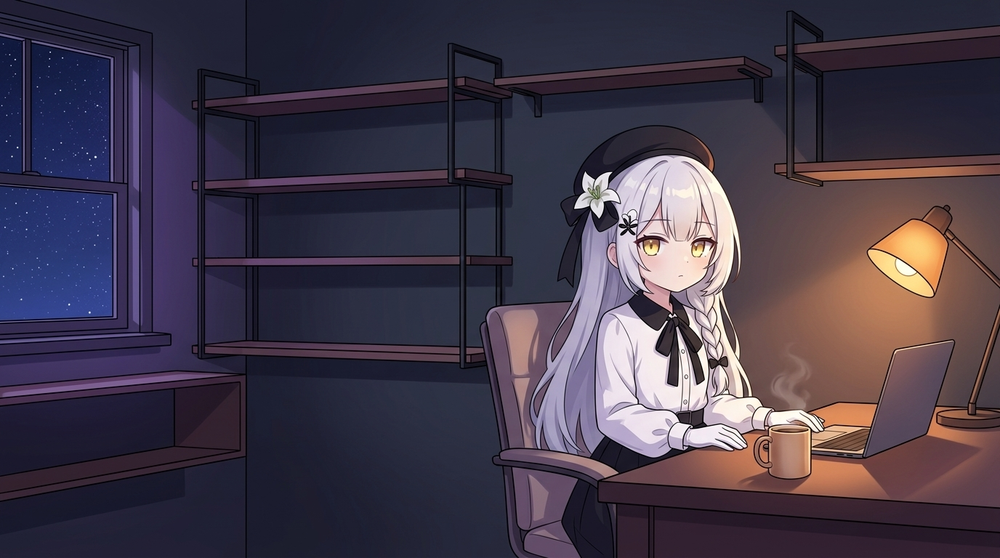

DNS-профиль .mobileconfig Chengdu Cert Pass: AppleP12.comБриз • Комната на ПК
Вижу, ты зашёл с компьютера. Не буду мучить тебя заглушкой «открой с телефона» — все файлы разложены прямо на полках слева. Можешь забрать .mobileconfig или IPA отсюда, либо переключиться на мобильный гайд.